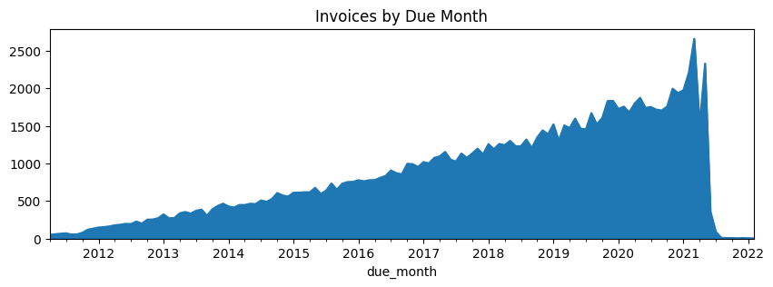

title: Exploratory Data Analysis authors: - Lauren Talbot created_at: 2023-04-13 00:00:00 tldr: A machine learning project is only as good as the data that goes into it. What are some of the high level aspects of the data that we can discover? How should we clean and filter the data? tags: [] updated_at: 2023-04-19 15:21:59.570359 thumbnail: images/output_22_1.png
python
%matplotlib inline
python
import pandas
data_folder = '../data'
date_format='%Y-%M-%d' #truncate datetimes to dates
invoices = pandas.read_csv(data_folder + '/invoice.csv', na_values='inf',
parse_dates=['invoice_date', 'due_date', 'cleared_date'], date_format=date_format)
payments = pandas.read_csv(data_folder + '/invoice_payments.csv', na_values='inf',
parse_dates=['transaction_date'], date_format=date_format)
We have two input datasets: invoices and their payments. - Payments are amounts in time, which are directly mapped to companies. - Invoices can have multiple payments, but usually only have 1.
python
invoices.dtypes
id int64
due_date datetime64[ns]
invoice_date datetime64[ns]
status object
amount_inv float64
currency object
company_id int64
customer_id int64
account_id int64
cleared_date datetime64[ns]
root_exchange_rate_value float64
dtype: object
python
payments.dtypes
amount float64
root_exchange_rate_value float64
transaction_date datetime64[ns]
invoice_id int64
company_id int64
converted_amount float64
dtype: object
```python
invoices.id.value_counts(dropna=False).value_counts(dropna=False)\ .to_frame(name="ids").rename_axis('invoices_per_id') ```
| ids | |
|---|---|
| invoices_per_id | |
| 1 | 113085 |
```python
len(set(payments.invoice_id) - set(invoices.id)) ```
0
```python
len(set(invoices.id) - set(payments.invoice_id))/invoices.len() ```
0.07127382057744175
```python
payments.invoice_id.value_counts(dropna=False).value_counts(dropna=False, normalize=True)\ .to_frame(name="invoices").rename_axis('payments_per_invoice') ```
| invoices | |
|---|---|
| payments_per_invoice | |
| 1 | 0.941871 |
| 2 | 0.054758 |
| 3 | 0.002552 |
| 4 | 0.000562 |
| 5 | 0.000143 |
| 6 | 0.000076 |
| 14 | 0.000010 |
| 9 | 0.000010 |
| 8 | 0.000010 |
| 7 | 0.000010 |
python
invoices.groupby("company_id")[["customer_id","currency"]].nunique()
| customer_id | currency | |
|---|---|---|
| company_id | ||
| 14 | 546 | 13 |
| 114 | 4509 | 15 |
python
invoices.groupby("customer_id").company_id.nunique().value_counts()\
.to_frame(name='customers').rename_axis('companies_per_customer')
| customers | |
|---|---|
| companies_per_customer | |
| 1 | 5055 |
python
invoices.groupby("company_id").account_id.nunique().to_frame(name="unique_accounts")
| unique_accounts | |
|---|---|
| company_id | |
| 14 | 1 |
| 114 | 1 |
python
invoices.groupby("account_id").company_id.nunique().value_counts()\
.to_frame(name='count').rename_axis('companies_per_account')
| count | |
|---|---|
| companies_per_account | |
| 1 | 2 |
Transaction data begins in 2011 and ends on 2021-01-31. We will assume this is when the data was pulled.
python
payments.__len__()
111623
python
payment_stats = payments.describe(exclude='int')
payment_stats.loc['% populated'] = payment_stats.loc['count']/payments.__len__()
payment_stats
| amount | root_exchange_rate_value | transaction_date | converted_amount | |
|---|---|---|---|---|
| count | 111622.000000 | 111623.000000 | 111623 | 1.116220e+05 |
| mean | 9416.980646 | 0.968372 | 2017-09-21 16:48:01.513129216 | 9.128716e+03 |
| min | 0.000004 | 0.000806 | 2011-01-01 00:05:00 | 1.800562e-08 |
| 25% | 4078.626249 | 1.000000 | 2016-01-18 00:07:00 | 3.180972e+03 |
| 50% | 9332.665539 | 1.000000 | 2018-01-20 00:02:00 | 8.819620e+03 |
| 75% | 14651.495863 | 1.000000 | 2020-01-05 00:02:00 | 1.461286e+04 |
| max | 19999.879159 | 3.253307 | 2021-01-31 00:03:00 | 6.120943e+04 |
| std | 6015.336178 | 0.244600 | NaN | 6.438813e+03 |
| % populated | 0.999991 | 1.000000 | 1.0 | 9.999910e-01 |
python
last_transaction_date = payments.transaction_date.max()
last_transaction_date
Timestamp('2021-01-31 00:03:00')
```python
(((payments.amount * payments.root_exchange_rate_value) - payments.converted_amount).abs()).max() ```
1.0913936421275139e-11
python
payments.select_dtypes(include='float').hist(bins=50, figsize=(12, 3), layout=(1,3))
array([[<Axes: title={'center': 'amount'}>,
<Axes: title={'center': 'root_exchange_rate_value'}>,
<Axes: title={'center': 'converted_amount'}>]], dtype=object)
```python
invoices['converted_amount'] = invoices.amount_inv * invoices.root_exchange_rate_value ```
python
invoices_stats = invoices.describe(exclude='int')
invoices_stats.loc['% populated'] = invoices_stats.loc['count']/invoices.__len__()
invoices_stats
| due_date | invoice_date | status | amount_inv | currency | cleared_date | root_exchange_rate_value | converted_amount | |
|---|---|---|---|---|---|---|---|---|
| count | 113060 | 113085 | 113085 | 113085.000000 | 113085 | 113085 | 113085.000000 | 113085.000000 |
| unique | NaN | NaN | 2 | NaN | 18 | NaN | NaN | NaN |
| top | NaN | NaN | CLEARED | NaN | USD | NaN | NaN | NaN |
| freq | NaN | NaN | 109382 | NaN | 85146 | NaN | NaN | NaN |
| mean | 2017-10-18 01:21:46.726340096 | 2017-09-09 19:59:16.684971776 | NaN | 10026.599910 | NaN | 2017-11-18 00:39:17.928637952 | 0.970822 | 9742.189020 |
| min | 2010-01-07 00:09:00 | 2010-01-21 00:12:00 | NaN | 0.027581 | NaN | 2011-01-01 00:05:00 | 0.000815 | 0.007976 |
| 25% | 2016-01-20 00:05:00 | 2016-01-18 00:08:00 | NaN | 5030.122601 | NaN | 2016-01-21 00:08:00 | 1.000000 | 4161.945155 |
| 50% | 2018-01-22 00:04:00 | 2018-01-20 00:05:00 | NaN | 10018.092660 | NaN | 2018-01-24 00:04:00 | 1.000000 | 9587.398549 |
| 75% | 2020-01-11 00:07:00 | 2020-01-08 00:12:00 | NaN | 15029.685611 | NaN | 2020-01-10 00:05:00 | 1.000000 | 15057.375121 |
| max | 2023-01-31 00:01:00 | 2023-01-01 00:01:00 | NaN | 19999.974875 | NaN | 2022-01-01 00:01:00 | 1.681560 | 32285.475685 |
| std | NaN | NaN | NaN | 5767.833365 | NaN | NaN | 0.246109 | 6286.160100 |
| % populated | 0.999779 | 1.0 | 1.0 | 1.000000 | 1.0 | 1.0 | 1.000000 | 1.000000 |
```python
(invoices.loc[invoices.invoice_date>payments.transaction_date.max()].len(), invoices.loc[invoices.invoice_date<payments.transaction_date.min()].len()) ```
(15, 1)
Exchange rates vary for both payments and open invoices. Customers would expect to pay the amount they were originally invoiced in their own currency, not the USD amount originally invoiced. Therefore, we should use raw amounts to determine how much is paid vs due.
```python
currency_ranges = invoices.groupby("currency").root_exchange_rate_value.describe(percentiles=[]) (currency_ranges['max']/currency_ranges['min']).sort_values().plot(kind='bar', title="Exchange Rate Spread Ratio") ```
<Axes: title={'center': 'Exchange Rate Spread Ratio'}, xlabel='currency'>

```python
invoices_usd = invoices.query("currency=='USD'").copy() invoices_usd['exchange_rate_is_1'] = invoices_usd['root_exchange_rate_value'] == 1 1 - invoices_usd.exchange_rate_is_1.mean() ```
0.015831630376059946
```python
time_to_clear = invoices_usd.cleared_date - invoices_usd.invoice_date invoices_usd['months_to_clear'] = time_to_clear.map(lambda t: round(t.days/30)) ```
python
invoices_usd.groupby("exchange_rate_is_1").months_to_clear.agg(['mean','count'])
| mean | count | |
|---|---|---|
| exchange_rate_is_1 | ||
| False | 3.562315 | 1348 |
| True | 2.104239 | 83798 |
python
invoices_usd.groupby(invoices_usd.months_to_clear.clip(upper=13, lower=-1))\
.exchange_rate_is_1.mean().plot(title='% of USD Invoices With Exchange Rate Equal to 1', figsize=(12,3))
<Axes: title={'center': '% of USD Invoices With Exchange Rate Equal to 1'}, xlabel='months_to_clear'>

All invoices have a date cleared. When an invoice is open, the date cleared is set to the future, and seems to be an assumed value.
python
invoices.loc[invoices.cleared_date.isnull()].__len__()
0
python
invoices.status.value_counts(normalize=True, dropna=False).to_frame(name="% of Invoices")
| % of Invoices | |
|---|---|
| status | |
| CLEARED | 0.967255 |
| OPEN | 0.032745 |
python
invoices.loc[invoices.cleared_date.isnull() != (invoices.status == 'OPEN'),['status','cleared_date']]\
.value_counts(dropna=False)
status cleared_date
OPEN 2022-01-01 00:01:00 3703
Name: count, dtype: int64
```python
invoices.loc[invoices.status == 'OPEN'].cleared_date.value_counts(dropna=False) ```
cleared_date
2022-01-01 00:01:00 3703
Name: count, dtype: int64
python
invoices.loc[invoices.status == 'OPEN', ['invoice_date','due_date']].max()
invoice_date 2023-01-01 00:01:00
due_date 2023-01-31 00:01:00
dtype: datetime64[ns]
python
(invoices.cleared_date>last_transaction_date).mean()
0.03274528009904054
python
invoice_payments = invoices.rename(columns={"id":"invoice_id","amount_inv":"amount"})\
.merge(payments, on="invoice_id", how='left', suffixes=('_inv', '_pmt'))
python
invoice_payments.invoice_id.nunique()
113085
python
duplicated_columns = [col.replace('_pmt','') for col in invoice_payments.columns if col.endswith('_pmt')]
for col in duplicated_columns:
inconsistent_rows = invoice_payments.loc[invoice_payments[col + '_pmt']!=invoice_payments[col + '_inv']]
print(f"{col}: {inconsistent_rows.__len__()/invoice_payments.__len__()} inconsistent rows in merged dataset")
amount: 0.1829583148818128 inconsistent rows in merged dataset
root_exchange_rate_value: 0.30690240050800865 inconsistent rows in merged dataset
company_id: 0.06734456856863548 inconsistent rows in merged dataset
converted_amount: 0.3867800773710552 inconsistent rows in merged dataset
python
invoice_payments.query("company_id_pmt!=company_id_inv").company_id_pmt.value_counts(dropna=False)
company_id_pmt
NaN 8060
Name: count, dtype: int64
python
invoice_payments.query("amount_pmt!=amount_inv")[['amount_pmt','amount_inv']].describe()
| amount_pmt | amount_inv | |
|---|---|---|
| count | 13836.000000 | 21897.000000 |
| mean | 5018.916400 | 9967.933614 |
| std | 5889.899213 | 5768.578282 |
| min | 0.000004 | 2.210771 |
| 25% | 94.592214 | 4956.197711 |
| 50% | 2087.812498 | 9941.744191 |
| 75% | 9183.459468 | 14934.380999 |
| max | 19989.986608 | 19999.974875 |
```python
invoice_payments.loc[invoice_payments.amount_pmt>invoice_payments.amount_inv].len() ```
0
```python
invoice_payments.loc[invoice_payments.converted_amount_pmt>invoice_payments.converted_amount_inv].len() ```
11075
python
invoice_payments_rollup = invoice_payments.groupby("invoice_id",
as_index=False).agg({"amount_pmt":['sum','count'],
"transaction_date":['min','max']})
invoice_payments_rollup.columns = invoice_payments_rollup.columns.to_flat_index().map('_'.join)
payment_totals = invoices.merge(invoice_payments_rollup, how="left", left_on="id", right_on="invoice_id_")
payment_totals['amount_remaining'] = payment_totals.amount_inv - payment_totals.amount_pmt_sum
Invoices with cleared dates or statuses can still have amounts remaining. 1% of cleared invoices were overpaid.
```python
cleared_invoices = payment_totals.loc[payment_totals.cleared_date.isnull()==False].copy() 1 - (cleared_invoices.amount_remaining==0).mean() ```
0.10322323915638676
```python
cleared_invoices = payment_totals.loc[payment_totals.status=='CLEARED'].copy() 1 - (cleared_invoices.amount_remaining==0).mean() ```
0.07288219268252549
```python
(cleared_invoices.amount_remaining<0).mean() ```
0.010522755115101205
```python
overpayments = cleared_invoices.query("amount_remaining<0") (overpayments.cleared_date>overpayments.due_date).mean() ```
0.5716768027801912
python
collected_invoices = payment_totals.query("amount_remaining==0").copy()
collected_invoices.status.value_counts(normalize=True, dropna=False)
status
CLEARED 0.99998
OPEN 0.00002
Name: proportion, dtype: float64
python
(collected_invoices.cleared_date-collected_invoices.transaction_date_max).describe()
count 101412
mean 3 days 17:20:24.789965684
std 42 days 12:41:59.168706657
min -30 days +00:01:00
25% 0 days 00:00:00
50% 0 days 00:00:00
75% 0 days 00:00:00
max 1112 days 23:55:00
dtype: object
python
(collected_invoices.cleared_date.dt.to_period('M')<collected_invoices.transaction_date_max.dt.to_period('M'))\
.mean()
0.0
python
(collected_invoices.cleared_date.dt.to_period('M')>collected_invoices.transaction_date_max.dt.to_period('M'))\
.mean()
0.008815524789965685
python
invoice_time_allowed = invoices.due_date - invoices.invoice_date
invoice_time_open = invoices.cleared_date - invoices.invoice_date
invoice_time_late = invoice_time_open - invoice_time_allowed
```python invoices['days_allowed'] = invoice_time_allowed.map(lambda t: t.days if not pandas.isnull(t) else None) invoices['days_open'] = invoice_time_open.map(lambda t: t.days if not pandas.isnull(t) else None) invoices['days_late'] = invoice_time_late.map(lambda t: t.days if not pandas.isnull(t) else None)
invoices['months_allowed'] = (invoices.due_date.dt.to_period('M') - invoices.invoice_date.dt.to_period('M')) invoices.months_allowed = invoices.months_allowed.map(lambda m: m.n if not pandas.isnull(m) else None) invoices['months_open'] = (invoices.cleared_date.dt.to_period('M') - invoices.invoice_date.dt.to_period('M')) invoices.months_open = invoices.months_open.map(lambda m: m.n if not pandas.isnull(m) else None) invoices['months_late'] = (invoices.cleared_date.dt.to_period('M') - invoices.due_date.dt.to_period('M')) invoices.months_late = invoices.months_late.map(lambda m: m.n if not pandas.isnull(m) else None) ```
Create periods from invoice date to close date Rolling payment window: due_date - current period Rolling days open: cleared_date - current period
Totals, Uniques, Averages, Ranges, Outliers, Missings Variables: Invoices, USD Amounts, Cleared/Open, Due Date, Invoice Date, Transaction Date, Customers, Companies, Accounts
e.g. customers with notable values
Cash collections don't follow due dates
Define & Quantify: customers' mean absolute % error each period from cash due.
Best outcome variable? Days late Days open (Total and Rolling) Days Open as a % of Payment Window (Total and Rolling) Days Late as a % of Payment Window (Total and Rolling)